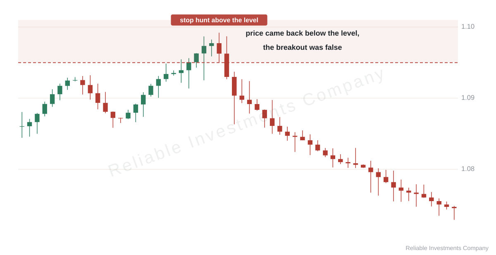

Workbook / False breakout: how to tell it from a real one
False breakout: how to tell it from a real one
Price pokes through a level, collects the stops standing behind it and comes back inside the range. That is a false breakout — and in that move nothing changed hands. The sellers lost nothing, the buyers won nothing, somebody’s position was simply closed at a stop.
Four things separate a false break from a real one. All four are visible on a bare chart, no indicator needed.
Sign one: a close, not a wick
A candle can spike through a level and close back below it. That is the sweep: price went for the stops and returned. A real break is confirmed by the body — the candle closed beyond the level and stayed there.
The question is small, the answer is not: when somebody says “it broke the level”, ask which bar. An entry taken on the wick was taken inside the sweep, not after a break.

Sign two: volume rises and holds
Orders stand behind a level. When they are actually taken out, volume rises and does not fall on the following bars: somebody is building a position.
Volume that spikes on one candle and dies is the fingerprint of stops firing, not of a level changing hands. Volume alone is a weak signal — it shows that someone traded, not who; but as confirmation of a break it is honest.
Sign three: the speed of the return
Price back inside the range within one or two candles is almost certainly a false break. Price that holds beyond the level for several bars and builds a small consolidation there is a real one.
Speed matters more than depth. A ten-pip spike with an instant return says more than a thirty-pip push that spends the next day crawling back.
Sign four: acceptance
Depth on its own proves nothing. If price goes far and stays, that is a new range and the old level has stopped being a border. If the poke is a few pips and the candle does not even close beyond the level, it is noise, not an event.
Why it happens
Three groups of orders sit at the same mark: limit orders, the stops of everyone who entered above, and the traders waiting for confirmation. A sharp move through the level takes out the second group. If the first group is not there in size, price comes back.
That is why false breaks cluster in ranges and on thin markets: behind the level there is genuinely nothing.
Two ways to trade it, different risks
The fade. Enter against the break, stop beyond the far border of the zone. The stop is short, but a share of fades turn out to be the first leg of a real break — especially against the higher-timeframe trend.
The break with a retest. Enter after a close beyond the level and a return to it. The stop is tighter than entering on the break itself, but the retest may never come: price runs and does not look back.
Neither is better. The fade loses often and small; the retest misses many moves. Pick one and keep the size fixed, or the two will keep cancelling out each other’s statistics.
If you do not trade yourself
Still useful. Three questions to any explanation of a trade:
- Was the entry on a close or on a wick?
- Did volume on the break rise and hold?
- Where was the stop — beyond the level or inside the zone?
The answers separate a calculation from a story. And one more thing: entering on false breaks is the most common source of a long series of small losses — the series that later gets explained as “the market was difficult”.
In short
- A false break is a poke, a stop collection and a return within one or two candles.
- A real one is a close beyond the level, rising volume and acceptance.
- Depth matters less than the speed of the return.
- In a range the fade works more often; in a trend, the break with a retest.
Next: why a level stops working on the fourth touch — and why that is not a malfunction.
Keep reading
Read the whole workbook
14 chapters, 44 charts, practice tasks and a checklist. Free, no sign-up.
PDF, 69 pages. Code word PRACTICE.